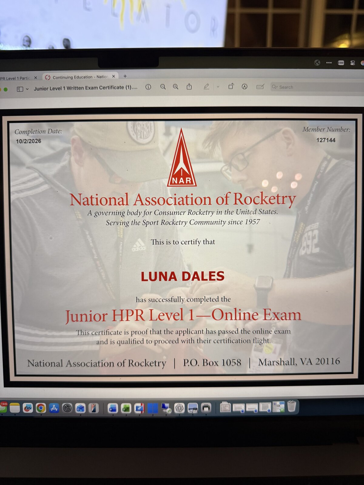
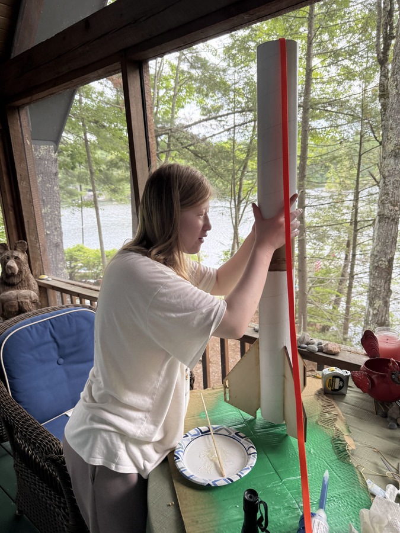

02 / Rocket construction and simulation
L1 Zephyr
Building the Zephyr for the National Association of Rocketry (NAR) Level 1 (L1) High Power Rocketry certification through its Junior HPR Participation Program.
Junior HPR exam passed · Rocket built · Simulations completed · Certification flight pending

Building a Zephyr rocket
I passed the National Association of Rocketry (NAR) Junior HPR Level 1 Participation Program certification exam and built a Zephyr rocket for the flight portion. Read about the NAR Junior HPR Level 1 program.
Building the Zephyr gave me experience using epoxy to build a larger rocket with stronger assemblies.
We attended two club launch events, but weather prevented a flight at both. The exam is passed; the certification flight is still pending. We plan to try again later in October.
Certification preparation
Passing the Junior HPR exam
I passed the NAR Junior HPR Level 1 online exam. My next step is to complete the certification flight with the Zephyr.


Construction in progress


Simulation / Predicted results
Checking stability and altitude before launch
I used RocketSim and OpenRocket to predict stability and flight altitude, as required by the local club.
The supplied H100W simulation report gives the following predictions for its modeled conditions. These are simulation outputs, not measured flight results.
Predicted maximum altitude
- Time to apogee
- 10.666 s
- Launch-guide departure speed
- 36.91 mph
- Launch-guide length
- 72 in
The report describes a positive prelaunch static margin and sufficient modeled speed at launch-guide departure. These checks are part of the preflight prediction; the rocket has not yet flown to provide a comparison.
Next opportunity
Complete the certification flight
Launch at a suitable club event when conditions permit. The next update will document the flight outcome and any observations that can be compared with the predictions.
Explore Flying Blind